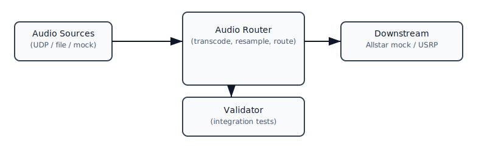

Audio Router
Audio Router
The audio-router is a small service in this repository responsible for routing and converting audio streams used by the integration tests and local development environment.
Summary
- Purpose: accept audio input from various sources (UDP, files, or mocked services), convert or transcode as needed, and forward to downstream services (e.g. Allstar mock, USRP adapters).
- Location: implementation and tests live under test/containers and pkg/usrp.
Running locally
- The integration stack in test/integration/docker-compose.yml includes the audio-router service.
- To run the integration stack locally (requires Docker with Compose plugin or the repo shim), use the repo tasks:
just test-integration— runs the integration tasks and validator.
Configuration
- Build context: the audio-router service uses a build context located at the repository root so source files are available to the Docker build; see test/integration/docker-compose.yml for details.
- Ports: the router listens on configured UDP ports (see test/containers/* mocks and test/tilt k8s manifests for examples).
Development notes
- Tests: the test/containers/test-validator script runs end-to-end checks that the audio-router and other services interoperate.
- Logging: run the router locally or inside the integration stack and use docker logs to inspect runtime behavior.
Troubleshooting
- If Compose build fails with "lstat ... no such file or directory", verify build contexts in test/integration/docker-compose.yml point to the repository root.
- If a container fails to start due to a mount type mismatch for prometheus.yml or similar, ensure the file exists in test/integration/configs/ and is a regular file, not a directory.
References - test/integration/docker-compose.yml - test/containers/test-validator/run-integration-tests.sh - test/containers/audio-router (implementation and Dockerfile)
If you'd like, I can expand this page with architecture diagrams, example UDP packets, or a quickstart showing how to run the router and stream audio into it locally.
Architecture (ASCII diagram)
The audio-router sits between audio sources (mocks, UDP producers, file playback) and downstream consumers (Allstar mock, USRP adapters, test validator).
+------------+ UDP/TCP/File +--------------+ RPC/UDP +------------+
| Audio Src | ------------------------> | Audio Router | ---------------> | Allstar |
| (mock/udp) | | (converter) | | mock/USRP |
+------------+ +--------------+ +------------+
- The router may spawn or configure codec/FFmpeg pipelines to transcode samples.
- Test validator interacts with the router to verify end-to-end audio flows.
Diagram

Configuration examples
1) docker-compose service (excerpt)
services:
audio-router:
build:
context: ../.. # repo root
dockerfile: test/containers/audio-router/Dockerfile
image: usrp/audio-router:dev
environment:
- AUDIO_PORT=4010
- LOG_LEVEL=debug
networks:
- test-net
ports:
- "4010:4010/udp"
2) Example environment variables
- AUDIO_PORT — UDP port to listen for incoming audio frames (default: 4010)
- SAMPLE_RATE — expected sample rate for mixer/codec (e.g. 8000 or 16000)
- LOG_LEVEL — logging verbosity (debug/info/warn/error)
Quick runbook snippets
Start the integration stack (uses repo shim or docker compose plugin):
# from repo root
./scripts/docker_compose.sh -f test/integration/docker-compose.yml up --build -d
./scripts/docker_compose.sh -f test/integration/docker-compose.yml logs -f audio-router
Stream a short test tone (local, using socat or ffmpeg):
# send a generated sine wave as raw u-law or PCM as appropriate to UDP port
# using ffmpeg to generate 1s of sine and send to UDP
ffmpeg -f lavfi -i "sine=frequency=1000:duration=1" -f mulaw udp://127.0.0.1:4010
Check router health and logs
docker ps --filter name=audio-router
docker logs <audio-router-container-name> --tail 200
Common issues and remedies
- Build context lstat errors: ensure
test/integration/docker-compose.ymlusescontext: ../..when the Dockerfile references repo files. - Socket / port collisions: if port 4010 is already used locally, change
AUDIO_PORTor stop the conflicting process. - Codec mismatch: confirm
SAMPLE_RATEand sample format match the downstream consumer expectations (Allstar mock usually expects 8kHz mu-law/RTP-like frames).
Extending this doc
- I can add example payload captures (pcap) or a small script to generate compatible UDP frames for automated testing.
- If you want image diagrams, I can add a rendered PNG to
docs/assets/and reference it, but ASCII keeps the repo simple.